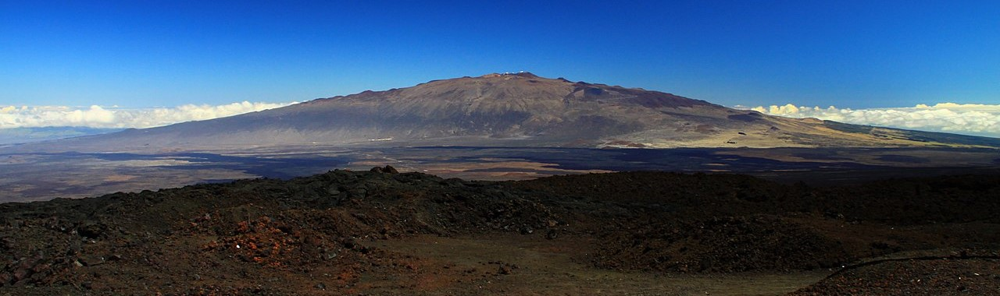

Skjoldvulkan
Skjoldvulkan er en vulkan med slake skråninger mellom 2-10 grader
som er blitt dannet av tyntflytende og gassfattig magma.
Mange av de største vulkanene på jorden er skjoldvulkaner.
Et eksempel er Mauna Loa på Hawaii som stiger 10 km opp fra
havbunnen. Skjoldvulkaner er dannet av lava som flyter med
lav viskositet (for eksempel basaltisk lava) – lava som flyter
lett. Navnet stammer fra den islandske vulkanen Skjaldbreiður.